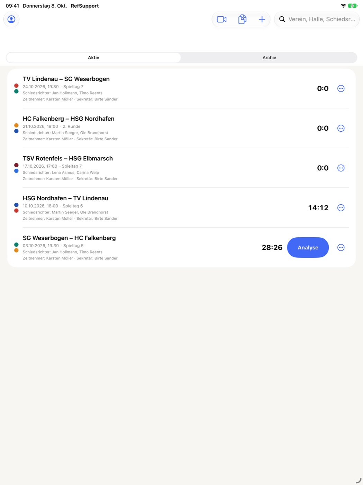
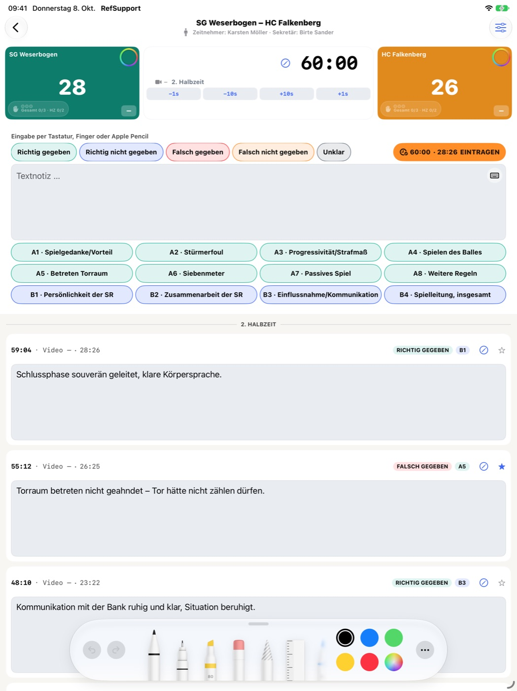
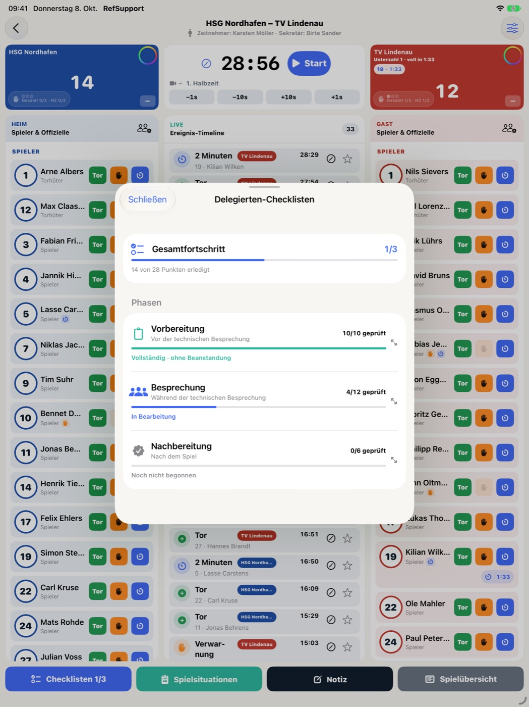
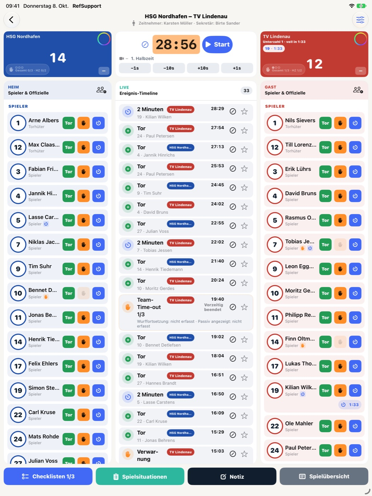
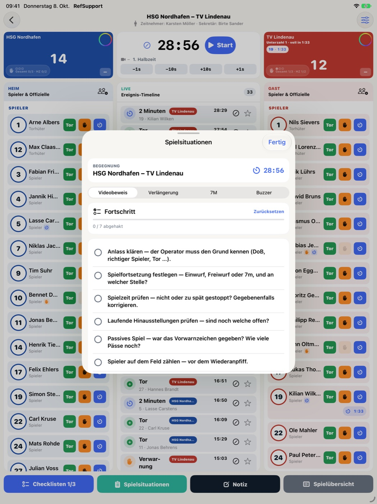
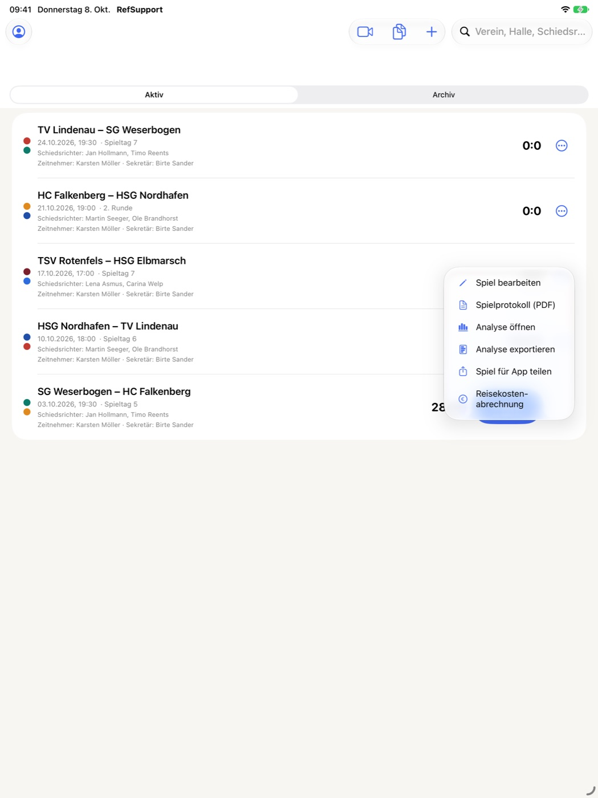

Guide
Getting started with RefSupport
Opening RefSupport for the first time? This guide walks you through everything in order, from first launch and setup to the finished report after your first match.
About the labels in this guide: RefSupport's interface is in German. Buttons and menu items are therefore quoted exactly as they appear in the app, with an English translation in brackets.
1. What you need
- An iPad or a Mac. RefSupport runs on iPad (iPadOS 17 or later) and on Mac. There is no iPhone version.
- Your Apple Account. It is used for the “RefSupport Pro” subscription and, if you are signed in to iCloud, for syncing between your devices.
- Internet access for setup. Subscribing, importing league fixtures and iCloud sync need a connection. Your matches and documents are then stored on the device and remain available offline in the arena.
- Optional: Apple Pencil for handwritten notes, and a Sportlounge account if you want to use match videos in the analysis.
2. First launch and subscription
RefSupport can only be used with an active “RefSupport Pro” subscription. When you first open the app, it checks your subscription status (“Abonnement wird geprüft …”) and then shows the subscription screen.
- Open RefSupport. The “RefSupport Pro” screen appears with the annual plan (“Jährlich”). The price and, if offered, the free trial period are shown on this screen.
- Tap the large button at the bottom. It reads “RefSupport Pro abonnieren” (Subscribe to RefSupport Pro) or, if a trial is offered to you, for example “… kostenlos testen” (try for free).
- Confirm the purchase in Apple's dialog with your Apple Account.
- After confirmation, the “Meine Spiele” (My Matches) overview opens automatically.
Already subscribed? Tap “Käufe wiederherstellen” (Restore purchases) on the subscription screen. Use the same Apple Account you subscribed with; the subscription then applies on iPad and Mac.
Purchase request pending? If your purchase needs approval first (for example with Ask to Buy on a child’s account), the app shows “Kaufanfrage ausstehend”. You get access automatically once the request has been approved.
The subscription renews automatically unless you cancel at least 24 hours before it expires. You can manage and cancel it later under “Meine Daten” → “Abo verwalten” (Manage subscription).
After app updates, a window titled “Neu in RefSupport” (New in RefSupport) may appear when you open the app. Close it with “Verstanden” (Got it).
3. Fill in “Meine Daten”
Before creating your first match, take two minutes for your profile. The details are needed for the expense claim, and your address is the starting point for the automatic distance calculation.
- In “Meine Spiele”, tap the person icon “Meine Daten” (My Data) at the top (on Mac also ⇧⌘P).
- Under “Person”, enter “Vorname” (first name) and “Nachname” (last name).
- Under “Adresse”, enter “Straße” (street), “Hausnummer” (house number), “PLZ” (postcode) and “Ort” (town).
- Under “Funktion”, choose your role: “Schiedsrichter*in” (referee), “Schiedsrichtercoach” (referee coach), “Zeitnehmer*in / Sekretär*in” (timekeeper / scorekeeper) or “Tech. Delegierte/r” (technical delegate).
- If your IBAN should appear on your expense claim, enter it under “Bankverbindung (optional)” (bank details).
- Tap “Fertig” (Done).
The same window later also offers “Jetzt synchronisieren” (Sync now), the “Abo” section with “Abo verwalten” and “Käufe wiederherstellen”, and “Hilfe & Rechtliches” (Help & legal).
Good to know: Your profile details (name, address, IBAN) are stored only locally on each device. If you use both iPad and Mac, enter them on both.
4. Check iCloud sync
You do not need to switch anything on in RefSupport. If you are signed in to iCloud on the device, the app syncs your matches and your own documents between your RefSupport devices through your private iCloud account. Everything also stays stored offline on the device.
- In your device's settings, check that you are signed in to iCloud with your Apple Account.
- Open “Meine Daten” in RefSupport. The “Spiele & Dokumente” (Matches & documents) section shows the iCloud sync status.
- Use “Jetzt synchronisieren” (Sync now) to trigger a sync manually if needed, for example before you leave for the arena.
5. Create your first match
As long as nothing has been created, “Meine Spiele” shows “Noch keine Spiele” (No matches yet). Tap “Neues Spiel” (New match) there or at the top right (⌘N on Mac). RefSupport then asks “Wie soll das Spiel entstehen?” (How should the match be created?)
Option A: “Aus Liga importieren” (Import from league)
The fastest way for 1. and 2. Bundesliga, 3. Liga, DHB-Pokal and Jugend-Bundesliga. The current season is always offered.
- Choose “Aus Liga importieren”.
- Choose the “Spielklasse” (competition), then the “Geschlecht” (gender) and, where available, the “Staffel” (division).
- Under “Spiel auswählen” (Select match), the app loads the fixture list. Search using the field “Team, Spielnummer, Halle oder Datum” or switch on “Nur vergangene Spiele” (Past matches only). “Aktualisieren” reloads the fixture list.
- Tap your match. “Import prüfen” (Review import) opens with match, competition, venue and officials.
- Check the “Spielort” (venue). The arena address is needed for the expense claim; adjust it with “Korrigieren” (Correct) or “Adresse suchen” (Search address).
- Tap “Spiel übernehmen” (Add match).
Note: For matches that have already been played, the result is not imported; the score starts at 0:0. If no appointments have been published yet, the officials stay empty. You can add them later through “Spiel bearbeiten” (Edit match).
Option B: “Manuell anlegen” (Create manually)
- Choose “Manuell anlegen”.
- Under “Heim” (home) and “Gast” (away), enter the team names and pick a colour for each.
- Under “Spiel”, set “Datum / Anwurf” (date / throw-off). Match number, arena, address and referees (comma-separated) are optional.
- Tap “Spiel erstellen” (Create match).
If possible, enter the arena address right away: it is used for the distance calculation in the expense claim. If it is left empty, the app uses the arena name.
Option C: “Aus Datei oder anderer App” (From file or another app)
If someone sent you a match as a .refsupportgame file, choose this option and tap “Geteilte Spiel-Datei importieren” (Import shared match file). The content is first shown under “Import prüfen” and saved as your own editable copy with “Spiel übernehmen”. Result and match history are not included. If you open such a file directly through AirDrop, “Open in” or the share sheet, it goes straight to this preview.


6. Open the match and choose a mode
Tap your match in “Meine Spiele”. The first time you open it, RefSupport asks “Modus für dieses Spiel wählen” (Choose a mode for this match):
- “Coach / Beobachter” (Coach / observer)
- For referee observation: match clock, score and observations with category and rating. Continue with step 7.
- “Delegierter” (Delegate)
- For technical delegates: squads, event timeline with goals and punishments, checklists and match situations. Continue with step 8.
- “Analyse” (Analysis)
- Opens the match directly in review mode, for example for video analysis after the match. See step 10.
Tip: The prompt appears before a match is opened for the first time, so decide beforehand in which role you are covering the match.
7. Coach mode: observing a match
Clock and score
- Start the match time at throw-off with “Start”. The same button stops the clock again as “Pause”.
- Count a goal by tapping the score of the team concerned.
- For a team time-out, tap the team's time-out: the first tap immediately stops the match time and starts the 60 seconds. In the time-out window you can record the restart (“Wurffortsetzung”), whether passive play was signalled (“Passiv angezeigt”) and the passes played.
- At the end of the first half the button changes to “HZ 1 Ende” (End of first half); the half-time window shows the punishments still running. Finish the match with “Spielende” (End of match).
Is the clock stopped? A stopped match time pulses orange, and in coach mode the entry button turns orange as well. If you make several entries while the clock is stopped, a notice reminds you.
Entering observations
- Write your observation in the note field, using the keyboard or by hand with Apple Pencil.
- If needed, choose a category from the observation sheet (A1–B4, e.g. “Stürmerfoul”, “Siebenmeter”, “Passives Spiel”) and a rating: “Richtig gegeben” (correctly given), “Richtig nicht gegeben” (correctly not given), “Falsch gegeben” (wrongly given), “Falsch nicht gegeben” (wrongly not given) or “Unklar” (unclear).
- Tap “EINTRAGEN” (Enter). The entry is added to the log with the current match time and score; the newest entries are always at the top.
- To change an entry, tap it in the log. Under “Eintrag bearbeiten” (Edit entry) you correct time, note, rating and category, flag it with “Als besondere Szene speichern” (Save as special scene) or delete it.


Correcting the match time and adjusting the display
- Correct the match time: Tap the displayed match time. Choose the reason (“Uhr lief/stand falsch” – clock ran/stood incorrectly, or “Uhrstand angleichen” – align the clock), set the time, check the live preview and tap “Bestätigen” (Confirm).
- “Anzeige & Aktionen” (Display & actions): The slider icon at the top right lets you set, among other things, the length of the half-time break, “Tore im Protokoll anzeigen” (Show goals in log) and the height of the note field. It also contains “Spielprotokoll (PDF)”, “Sportlounge” and “Zurücksetzen” (Reset).
Careful with “Zurücksetzen”: Time, score and the complete log are deleted. This cannot be undone.
8. Delegate mode: running a match
Before the match: record the squads
- As long as no squad exists, the team column shows “Noch kein Kader” (No squad yet). Tap “Kader erfassen” (Record squad).
- Under “Kader vorbereiten” (Prepare squad), choose the team at the top.
- Import the paper match report with “Kamera / Scan”, “Foto” or “PDF”, or add people with “Manuell” or “Person hinzufügen” (Add person). If the iPad asks for camera access on the first scan, allow it.
- Check the recognised entries. Tap people flagged “Prüfen” (Check) and correct role, shirt number (for officials the letter A–E) and name. When everything is right, tap “Alle geprüft” (All checked).
- Tap “Kader übernehmen” (Apply squad) and repeat for the second team.
Text recognition runs on the device. The photo itself is not stored in the match; only the squad data you have checked is kept.
Before the match: checklists and start of match
- Tap “Checklisten 0/3”. The delegate checklists guide you through three phases: “Vor der technischen Besprechung” (before the technical meeting), “Während der technischen Besprechung” (during the technical meeting) and “Nach dem Spiel” (after the match).
- Tick off each item with “In Ordnung” (OK) or “Beanstandung” (Objection) and add a remark if needed. The counter on the button shows how many phases are complete.
- Under “Prüfpunkte bearbeiten” (Edit check items) you hide items you do not need and add your own questions. Your own questions are carried over to your new matches.
- “Spielbeginn” (Start of match) shows the details from the technical meeting at a glance: throw-off, bench, colours and entrance times.


During the match: recording events
- Start the match time with “Start”; “Pause” stops it.
- Tap a person in the squad and choose the event: “Tor” (goal), “Verwarnung” (warning), “2 Minuten” (2-minute suspension), “Disqualifikation” or “Blaue Karte” (blue card). Goals and punishments are saved immediately with one tap and appear in the “Ereignis-Timeline” (event timeline).
- For punishments, the app asks when a decision is needed, for example whether a further suspension is added consecutively or started in parallel. Running suspensions and numerical inferiority are shown with the team concerned.
- For a team time-out, tap the team's time-out: the match time stops and the 60 seconds run.
- Use “Notiz” (Note) to record a free note at the current match time.
- Tap a wrong entry in the timeline and change or delete it under “Ereignis bearbeiten” (Edit event). Score, punishment counters and running suspensions are adjusted accordingly.


Special match situations
The “Spielsituationen” (Match situations) button opens guided procedures for video review, extra time, 7-metre shoot-out and buzzer. You choose which of them you need through the slider icon under “Spielsituationen”. At the end of the match, “Verlängerung” (Extra time) is available alongside “Spielende”.


After the final whistle
- End the match with “Spielende”.
- Work through the “Nach dem Spiel” checklist.
- Open “Spielübersicht” (Match summary): it lists the fixture, officials, checklists, times, team time-outs, favourites and the complete timeline. “Zusammenfassung teilen” (Share summary) passes the summary on as text.
9. After the match: reports and expenses
Go back to “Meine Spiele”. The action menu in your match's row (or a long press on the match, right-click on Mac) gives you all outputs:
- “Spielprotokoll (PDF)” (Match report)
- Creates the log of your match as a PDF and opens the share sheet.
- “Analyse exportieren” (Export analysis)
- Outputs the analysis report as a PDF.
- “Spiel für App teilen” (Share match for app)
- Creates a
.refsupportgamefile that others can open in their RefSupport app. Expenses and documents are not included. - “Reisekostenabrechnung” (Expense claim)
- Opens the expense claim for this match (see below).
- “Spiel bearbeiten” (Edit match)
- Changes teams, date, match number, league, arena, arena address and referees.
Only your choice in the share sheet determines where a file goes, for example Mail, AirDrop or “Save to Files”.
Creating an expense claim
- Choose “Reisekostenabrechnung” for the match.
- Under “Fahrtkosten – PKW” (Travel costs – car), the app calculates the outward and return journey by road between your address and the arena, rounded up to 5 km. Adjust the kilometres if needed.
- Choose “Alterskategorie / Geschlecht” (age category / gender) and your “Funktion” (role) for this claim.
- Add “Weitere Positionen” (Further items) if needed and check the total.
- “Speichern” (Save) stores the details; “Rechnung erstellen & teilen” (Create & share invoice) generates the PDF and passes it to the share sheet.


10. Analysis and Sportlounge video
▶ Video: analysis on Mac (0:30)
In the analysis you review your match: you go through the recorded scenes, add comments and, if a Sportlounge video is linked, jump straight to the matching point in the video.
- In “Meine Spiele”, tap “Analyse” on the match or choose “Analyse öffnen” (Open analysis) in the action menu.
- The analysis lists the scenes from your log. “Szenen filtern” (Filter scenes) narrows them down by categories A1–B4 and decision rating.
- Tap a scene to add club, rating, categories and a comment (typed or handwritten) in the “Szenendetails” (scene details).
- Under “Allgemeine Anmerkungen” (General remarks) you record what applies to the match as a whole.
- Output the finished report in “Meine Spiele” through “Analyse exportieren”.
Connecting a Sportlounge video (optional)
- In “Meine Spiele”, tap “Sportlounge” at the top and then “Mit Sportlounge anmelden” (Sign in with Sportlounge).
- Enter the email address and password of your Sportlounge account, switch on “Angemeldet bleiben” (Stay signed in) if you wish, and tap “Anmelden” (Sign in). If your account belongs to several clubs, you then choose the club.
- Open the analysis of your match and tap “Sportlounge-Link einfügen” (Insert Sportlounge link). Enter the Sportlounge link or GameId of this match; every match has its own link.
- Under “Halbzeit und Video-Startzeit” (Half and video start time), enter the position in the video at which each half begins (MM:SS or HH:MM:SS). This lets the app find the right point in the video for every match time.
- Under “Szenen-Vorlauf” (Scene lead time), set how many seconds earlier the video should start when you tap a scene, and confirm with “Speichern”.
On Mac: The video can be moved to a window of its own, for example for a second display. “Video zurückholen” (Bring video back) returns it to the analysis.
11. Keep documents available offline
“Dokumente” (Documents) in “Meine Spiele” (⇧⌘D on Mac) keeps regulations and your own papers at hand in the arena, even without a network.
- “Standarddokumente” (Standard documents) are included with the app.
- “Dokument importieren” (Import document, plus icon) adds your own files and lets you name them. On Mac you can also drag files into the window.
- Your own documents can be renamed, deleted and found through the search field.
- Your own documents are synced through iCloud like matches; “Dokumente synchronisieren” (Sync documents) triggers the sync.
12. Search, archive and delete matches
- Search: The search field in “Meine Spiele” finds matches by club, arena, referee or date.
- Archive: Move finished matches out of the active list with “Archivieren” (Archive) in the action menu or by swiping. The “Aktiv” / “Archiv” switch changes the view; “Aus Archiv holen” (Restore from archive) brings a match back.
- Delete: “Löschen” (Delete) removes the match with all associated data. This cannot be undone, so archive if in doubt.
13. If something does not work
I see the subscription screen again although I have a subscription.
Tap “Käufe wiederherstellen” and check that you are signed in with the Apple Account you subscribed with. If the subscriptions do not load, check your internet connection and tap “Erneut versuchen” (Try again).
My matches are missing on my second device.
On both devices, check that you are signed in to iCloud and online. Then open “Meine Daten” and tap “Jetzt synchronisieren”. Local content stays on the device even if iCloud is temporarily unavailable.
The fixture list does not load.
The league import needs an internet connection. Tap “Erneut versuchen” or “Aktualisieren”. If you cannot find your match, create it with “Manuell anlegen”.
The kilometres are not calculated automatically.
The calculation needs your address under “Meine Daten” and an arena address in the match (through “Spiel bearbeiten” → “Hallenadresse”). If one of them is missing or no route can be found, enter the kilometres by hand.
After restarting the app, “Uhren nach App-Neustart prüfen” appears.
If the app was closed during a running match, RefSupport asks you to check match time and suspension times. Compare the clock with the arena clock and correct it if needed by tapping the match time.
The squad scan recognises names or numbers incorrectly.
Photograph the match report as straight, complete and well lit as possible. Correct entries flagged “Prüfen” by hand and add missing people with “Person hinzufügen”.
Contact
More answers are on the support page. If a question remains open, email ref_support@icloud.com. Please include the RefSupport version and describe the steps leading to the problem. Do not send passwords or unnecessary personal data.